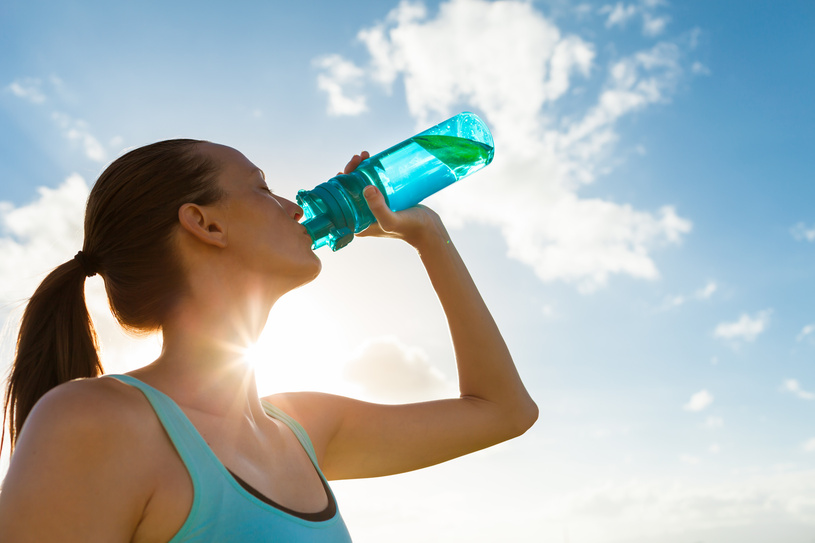

A água representa cerca de 60% do peso total do corpo de um indivíduo adulto e quase 80% do corpo de uma criança. Ela é o principal componente das nossas células, mas também é encontrada fora dessas estruturas (líquido extracelular). Entre as células que mais apresentam água, destacam-se aquelas localizadas nos músculos e nas vísceras. É fundamental que fiquemos hidratados. Recomenda-se a ingestão de pelo menos dois litros e meio de água diariamente para que nosso organismo funcione adequadamente.
Além da ingestão, essa substância também pode ser retirada de todos os alimentos, que se diferenciam apenas pela quantidade de água disponível em cada um. Nosso organismo consegue ficar muito tempo sem nenhum alimento, mas não sem água. Pesquisas comprovam que, de três a cinco dias, uma pessoa pode morrer caso não tenha acesso a essa substância. Sendo assim, lembre-se sempre de se hidratar, dando atenção especial aos dias quentes e à prática de atividades físicas pesadas.
E pensando nisso, criamos um incrivel cronograma para te auxuliar a sempre beber água, ele te ajuda e fazer uma rotina onde esteja marcado os momentos certos para você beber água. O incrivel cronograma Beba água é capaz de se admpitar a sua rotina, sem te tirar das suas obrigação, porém sempre mantendo um horario marcado especialmente para beber água. Venha, aproveite e peça o seu já
Relatos
"Eu simplesmente adorei, estava tendo serios problemas por falta de água no organismo, e mesmo assim nunca me lembrava de beber água, já que estava sempre ocupada, agora com esse cronograma tudo mudou para melhor. Eu simplesmente adoro."
"O cronograma é otimo, me auxiliou muito a beber água nos horarios certos, minha saúde melhorou e graças a ele, tenho mais disposição. Recomendo."
"Simplesmente maravilhoso, virei outra pessoa desde que comecei a utilizar o cronograma, uso e recomendo a todos."
Venha, não perca tempo, faça como essas pessoas, clique no botão abaixo, entre com o seu perfil e adquira já o seu cronograma